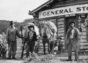
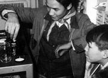
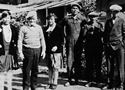
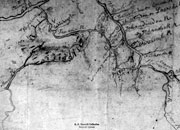
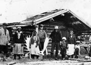
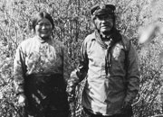

«Et ils avaient leur propre système de justice et leur système de clan. C’est pourquoi ils ont survécu, ils étaient autonomes.»
Pearl Keenan (1998)
Anciennement, les Premières nations du Yukon formaient des groupes composés de plusieurs ménages. Les personnes faisant partie du même groupe parlaient la même langue et établissaient habituellement des liens étroits. Ils ne restaient pas dans la même habitation à l’année. Ils se rendaient à différents endroits pour chasser, pêcher et cueillir des fruits sauvages. Au cours des années, les peuples de l’intérieur ont établi des liens étroits avec les Tlingit de la côte du Pacifique et les peuples du centre de l’Alaska et de la vallée du Mackenzie. Les Premières nations suivaient un système matriarcal, retraçant leurs liens généalogiques en passant par les femmes. Leur société était composée de deux moitiés. Chaque personne de la même moitié appartenait au «peuple de leur mère». Ceux de l’autre moitié appartenaient au «peuple de leur père». Les personnes des deux moitiés se mariaient entre elles. À de nombreux endroits dans le territoire, les deux moitiés étaient appelées le clan du Loup et le clan du Corbeau. Chaque clan a son emblème de même que ses légendes et ses chants qui retracent ses origines jusqu’au début des temps. Les clans étaient responsables d’emplacements particuliers où ils chassaient et pêchaient. De plus, ils s’occupaient de préserver les ressources. Chaque saison, les chefs de clan, femme ou homme, décidaient du moment de voyager et de la destination. Le partage des ressources et l’entraide d’antan font encore partie de la vie d’aujourd’hui.
Passer au tableau Nouveaux arrivantsKwäday Kwädän : Ancêtres
(Ci-dessus) Un groupe de Kaska à Ross River (vers 1922).
AY, collection Tidd nº 7633
Groupe d'hommes devant le magasin général de Carmacks (vers 1917).
AY, collection Back, 90/19 nº 76
Allen Benjamin et Howard Linklater travaillent à un projet scolaire à Old Crow (vers 1970).
AY, collection Chief -Zzeh-Gittlit nº 9363
«Princesse Pat» Lindgrin (fille du chef Isaac), Apple Jimmy Oglo, Irene Whitehouse, Dave Roberts, Riley Johnny et Stanley Roberts à Dawson (sans date).
AY, collection Kates nº 5770
Carte du cours supérieur du fleuve Yukon et des rivières Tanana et Kuskokwim, dessin de Paul Kandik, «Indien du Yukon» (vers 1890).
Bancroft Library, Berkeley
M. et Mme Allen, Jimmie Enoch, Annie Enoch, Billy Blair fils et William Blair père et trois autres personnes à Snag (années 30).
AY, collection Billy Blair, 82/384 nº 3
Le chef Isaac, Aishihik, et sa femme Rachel, probablement à Carmacks (vers 1914).
AY, collection Back, 90/19 nº 30